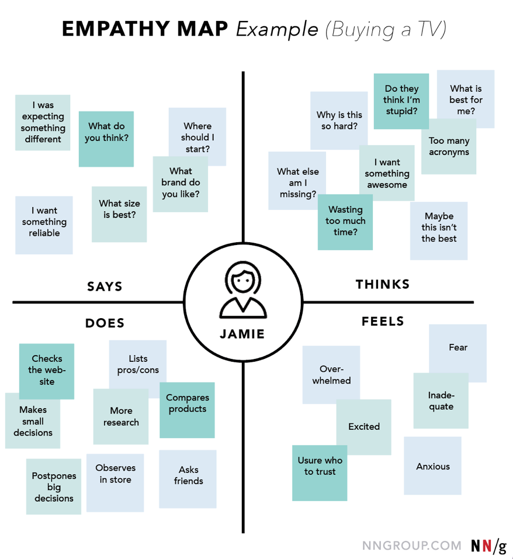

On this page
So the note taker has one job, to take notes. Sometimes we can record the interview but sometimes, this can make a subject feel more under pressure and in many way go against the nature of the process and so, we simply remain silent. Perhaps a little bit of eye contact and a nice smile but essentially, you are invisible.
Pay special attention to when the Facilitator is contextualising the user. Grab key data points especially;
Their name
Job
Occupation
Interests
Frequency of contact with problem
What you are looking out for
There are two types of signals that you will be looking out for
- Explicit Signals
- What They Say.
- What They Do.
- Implicit Signals
- What They Think.
- What They Feel.
When watching for explicit signals, you will be capturing useful quotes as well as observing if the subject struggled at any particular stage or if they moved swiftly through a particular part of the process.
Whilst watching implicit signals, you are looking for non-verbal cues and signs of distress, confusion, discomfort or otherwise times when they stutter, pause, laugh or show some visual which clearly demonstrates a frame of mind or temperamental disposition.
It is often the case that a subject will say one thing and the look or expression on their face will reveal something completely different.

The method with which you can take notes is by use of an empathy map or optionally if you prefer to simply taking notes based on two signal types, as you like it.